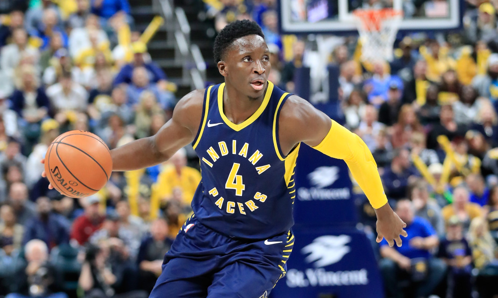
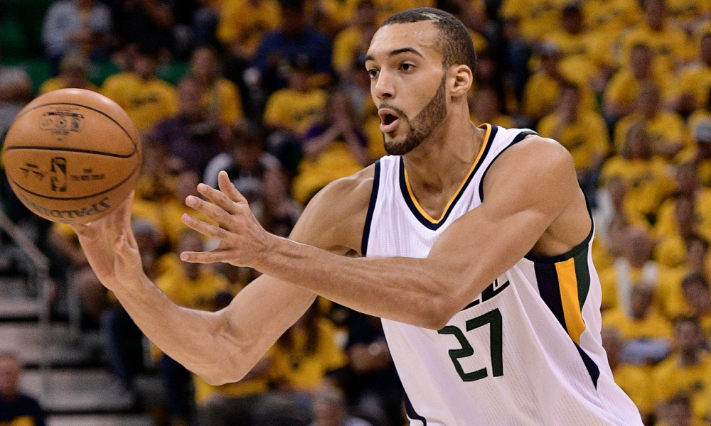

Game 1: Detroit Pistons at Philadelphia 76ers
My Pick:
Philadelphia 76ers
Why I'm Rolling with them:
This 76ers team is coming off of a win against a very good Clippers team, where Embiid put up a monster 41 points in the win. Even better for the Sixers was the spark that Fultz provided in the 3rd quarter to help the 76ers regain their lead. If he continues to improve like this, this Sixers team is going to be very dangerous. The Pistons seem to have stagnated as of late, and a bounce back game is due. But it won't be on the road against this Philly Team. Philadelphia wins 124-115.
Game 2: Cleveland Cavaliers at Charlotte Hornets
My Pick:
Charlotte Hornets
Why I'm Rolling with them:
Charlotte lost a close one to OKC on Thursday, but there were some positives in the game as well. First and foremost is that Monk had 21 points off of the bench, but Kemba's continued excellence is also a great sign for this Charlotte team. On the other side of the court, the Cavaliers have struggled after picking up their first win. Clarkson seems determined to shoot them out of every game, which is frustrating because this team is going nowhere fast and I'd rather see Sexton and Osman develop. Charlotte takes it, 117-105.
Game 3: Boston Celtics at Indiana Pacers
My Pick:
Boston Celtics
Why I'm Rolling with them:
The main argument for this pick is pretty simple. I just think Boston is a way superior team to this Pacers team, they match up well with them across all 5 positions, and Boston has just been getting better as Hayward and Kyrie get reintroduced to the system. However, this is compounded with the fact that Indiana played a thriller last night that went down to the final couple possessions, and should be tired today. The Celtics depth should limit Indiana's bench production, which is enough for the Celtics to win 115-109.
 Oladipo is making another All-NBA bidGame 4: Miami Heat at Atlanta Hawks
My Pick:
Miami Heat
Why I'm Rolling with them:
Miami has sneakily been playing alright basketball, as they currently occupy the 8th seed in the east. Dragic is still the driving force for this team, but Olynyk has been a solid player for the heat as well. Wade as a spark plug off of the bench is a good role for him, and he should be able to succeed against Atlanta's relatively weak bench. Atlanta will once again live or die by Trae Young and Prince, which won't be enough against this solid Heat team. Heat win, 114-104.
Game 5: Houston Rockets at Chicago Bulls
My Pick:
Houston Rockets
Why I'm Rolling with them:
The Rockets finally snapped their losing streak last night against a decent Nets team. They shouldn't have an issue with the Bulls, who also played last night and won't have an answer for Chris Paul. If Melo can rewind the clock to put up another good game today then Houston should have this in the bag, but it's more in line with his normal statlines, Houston may have a harder time. I'm picking Houston, at 120-113.
Game 6: New Orleans Pelicans at San Antonio Spurs
My Pick:
San Antonio Spurs
Why I'm Rolling with them:
The Spurs have looked great to start the year, due to the amazing play of their All-NBA duo of DeRozan and Aldridge. DeMar is having a great start to his season, and Aldridge looks inspired against the bigger stars of the league. Davis may be out again, and if he is you can count on the Spurs to have a great game. Holiday will probably be on DeMar, a tough matchup for him but with his increased playmaking the Spurs should still win 116-108.
Game 7: Utah Jazz vs Denver Nuggets
My Pick:
Denver Nuggets
Why I'm Rolling with them:
The Jazz have looked lackluster lately, with their loss last night to Memphis showing just how much they need Mitchell to play in order to have a consistent offense. Denver is riding a 3 game winning streak, and is playing at home, which may just be the biggest advantage in sports due to the elevation. If Mitchell is out again, this game will be a blowout. If he isn't, count on this Denver team to take advantage of the Jazz's back to back tiredness and win 125-117.
 Gobert has been playing very well on the offensive end so far this seasonGame 8: Los Angeles Lakers at Portland Trail Blazers
My Pick:
Portland Trail Blazers
Why I'm Rolling with them:
Portland has looked good to start the season, and are 6-2 and occupying the 3rd seed in the West. I'm still a firm believer in CJ, even if he has been cold to start this year. Their guards match up nicely against LA's, and their center rotation should be able to punish the Laker's weak inside. Lebron will continue to do Lebron things, but it won't be enough as Dame scores 33 in a 124-112 Portland victory.